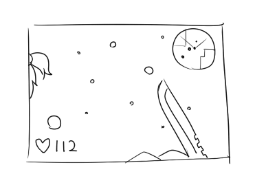

------------------------------------------------------------- 雑記 ログ7（2010/12/24から2011/3/22） ------------------------------------------------------------- 2011/3/22 ジェバンニ製作を実行してみた． きつねさんべしんべしん． まるかじりかじられの仁義なき戦いがはじまる． >> 03/21 21:31 よう、さきつね。今日こそお前をボブらせてやるぜ･･･ッッ！ そこにボブがいるからさ >> 03/20 00:01 被災者の方々のために募金してるさきさんを偽善者と罵倒して、 被災者の方々に何もしてない、何もできない自分を正当化したいのか？安心させたいのか？ 自分の価値を上げるのが難しいから、 他人の価値を落とすことで上に立とうとするのか？ 反吐が出るっ！ さきさん、こんなやつに謝ることねぇですぜ！ そもそも善行と偽善なんて言い方・捉え方の違いであって、ほとんどイコールみたいなもんなんだ。 募金で救われる人が1人でもいれば、それは偽善ではない。 立派なことをしているんだ。 他人を罵倒するよりずっと価値のあることをしているんだ。 他人の善行を偽善と叩くやつなんて、偽善すらできない人間の遠吠えなんだ。 気にするこたぁねぇ！ なんか最近気にしなくなりました >> 03/20 02:19 MUGENキャラ作ってて一番楽しいのは 「描いた絵を実際に登録して動かしたとき」 に尽きると感じています。 CNSを組んで技を作っているときも楽しいんですけど、 やっぱり絵を用意するのが一番苦労する…というか面倒くさいし、 手まひまかけて描いた絵が実際に動いているのを見ると、報われた感じしますね！ さきさんはどうです？ ゲームを実際に動かすときが一番楽しいですか？ それとも「面白かった」みたいな反響があるのが一番ですか？ というかリョナゲー作者にとって 「面白かった」と 「抜いた」とどっちが喜ばしいの どっちもだけどあんま生々しいと反応にこまるっちゃこまる >> 03/20 02:53 語尾にｗｗｗｗをつけると凄い楽しいよ くぱあｗｗｗｗｗｗｗｗｗｗｗｗｗｗｗｗｗｗｗｗさきつねさんくぱあｗｗｗｗｗｗｗｗｗｗｗｗｗｗｗｗｗｗｗ な･･･？ (*‘ω‘ ｗｗｗｗ) >> 03/20 04:53 本人証明時：◆a6e.xnOu1E Ou1E････おういえ･･･おういえ！！！１１ おええええ >> 03/20 05:00 かのこん見ようず 双子はもらっときます みたことないなー >> 03/20 17:49 携帯から書き込めないじゃない？ アキネーターで奈々さんが以下略ナリ 以前奈々さん涼子さんどころかきつねさんまで出て驚いた >> 03/20 22:35 サキさんの影響で私もgamemakerにとっついてみたんですけどGMLってのがちんぷんかんぷん助けて下さい先生 やる気と気合で 今日アップしたゲームにgmk入れといたし参考になれば コメント無いけど >> 03/20 22:46 なんで狐ってこんなに可愛いんだろう きつねだからです >> 03/19 12:02 いるよねぇ。募金した人を罵倒する人間もどき そのくせ自分が被災して家無くして食べていくのも辛い状況になって、それで何も支援されなかったら怒るんだよねー。そういうゴミって そういう人でも助けなければならない自衛隊の人たちはすごいとおもいます >> 03/19 16:15 何かを「つくる」人は、そのユーザーの反応で喜ぶもんですよね。 音楽は聴いて共感してもらえれば喜び。 ゲームならプレイして楽しんでもらえれば喜び。 絵であるなら良い絵だと感心してくれれば喜び。 そこで気になったんですが、禁画描いてた貴方は抜いてもらえれば喜びますか。 それともお腹空きましたか。僕はカレーヌードルが好きです。 お腹もすいたし褒めてもらうとよろこんで布団でばたばたする >> 03/19 16:40 大事な順番「募金するという行動自体＞気持ち＞金額」 極端なこといっちまえば募金せずに他人を蔑む奴よりゃ、募金した事を言い回って善人面してる人のがマシだと思うんだ。 個人的には，金額＞気持ち さげすんで入れた１億と心をこめた１０円ではやっぱり１億のほうが役立つのが現実 というか単純に不等号でもないだろうなぁ >> 03/19 23:22 わ・・・わたしは・・・ 被災者の方にもだけど・・・ さきさんに募金したいな・・・ きもちだけいただこう >> 03/19 23:26 絵を描くとき 「やるきでる」→「下書きする」→「やるき使い果たす」→「終了」 「やるきでる」→「ペン入れする」→「やるき使い果たす」→「終了」 「やるきでる」→「着色する」→「やるき使い果たす」→「終了」 というサイクルを経ないと完成にこぎつけられません。 1つ1つの作業に時間をかけすぎるからなんでしょうか。 やる気が足らんのでしょうか。 わたしもそんなん >> 03/18 03:07 おひさしぶ涼子さん さよう奈々さん おやすみなさきつねさん 楽しい仲間（の首とかが）ぽぽぽぽーん ぽーん >> 03/18 19:48 こんにちはー初めまして、 グロ耐性無いものでゲームは見れませんが、夢日記はときどき見にきてる者です。 思い切って突撃してきました。 突然で勝手ながらSAKIさんにお願いです。 最近忙しいようですが、、、 メールとかそういった手段で、できれば人の相談や悩みとか聞いてあげてほしいのです。 言葉で言い表しづらいですが、何か考えて夜も寝れない人がいそうな予感・・・ できる事ならあまり他の方から遠い存在にならず、コンタクトが取れたらいいと思います 変な意見でしたがよろしくお願いします。サキさん流でいいので； 俺も立派なクリエイタになれるように頑張ります 失礼しましたー んー，来るものは拒まずだよー >> 03/18 20:05 旧BBのゴーレムさんが倒せないデス 不慣れなぼくに何卒ご指導をば 願いますデス 砂に埋まると死にやすい >> 03/17 10:39 さきつねさんの尻尾ハムハムしていいですか？ してもいい >> 03/17 10:41 もっと罵ってください！その黒ニーソで踏んでください！ﾊｧﾊｧ ぐりぐり >> 03/17 17:33 hesoって良いよね、興奮するよね いいね >> 03/16 20:57 セーラー服の中身はどこいった？ それはざんぞうだ >> 03/16 21:51 しんでないししんでないし ↑ これヤバい 「しんでないし」を2つ並べただけなのに、 なぜか左の「しんでないし」が長く見えて 右の「しんでないし」が短く見える。 錯覚だ。 あとLive通知メールに最近あまりに木津金杉だろうどうしたと思ったら着信音量レベル1になったた。 しんでないﾚしんでないし >> 03/15 04:09 バルス スバル >> 03/15 13:17 これは奈々さんの貴重な入浴シーン！・・・え、違う？ ちゃんとかけないとしわになてしまう >> 03/15 23:55 呑みこまれてる時に、モンスターの体内が透けて見えるような設定をできるようにお願いします。 あぁうんそれはしている >> 03/14 07:53 画像がどう見ても事後な件 ﾁｭﾝﾁｭﾝ >> 03/14 15:36 首から肩にかけてすごく痛い 私をリョナるのやめてよぉ・・・ 貴様の肩に圧力をかけてくるしめてやろう >> 03/14 20:50 あなたが食べたのはさきつねさんですか もしくは奈々さんですか いいえ、コスプレする涼子さんでした…？ 丸呑みさんです（嘘 >> 03/13 00:16 きつねさんの口からお尻まで触手貫通プレイしたら途中で触手が消化される所まで夢想した。 次は負けない。 なんてこった >> 03/13 02:11 金あるくせに全部私利私欲の為に使って募金もしないで何も食べられずに死んでいく人間を何とも思わず食物の生産すらせず消費と汚染することしかしない悪性腫瘍的な人間こそが死ねえ！！ おちけつ >> 03/13 03:59 ほーれほれお揚げをやろう、ほーれほれほれ。 さあ早く狐ゲーを完成させるんだほーれほれ。 俺の為に狐ゲーを作るんだもっとほらもっともっとおおおおおおおおんんんンンンンッッンンッ！ ﾑｼｬﾑｼｬ >> 03/13 10:58 とりあえずYOUが無事なようで何より 大した額じゃないが募金箱には幾らか突っ込んでおくか うむ >> 03/13 16:17 rape >> 03/13 16:17 sex ryona >> 03/13 17:44 募金の変わりに投票しといた ありがとう >> 03/13 18:57 1日1拍手 1日1触手 1日1もふもふ いや、5もふもふしたい むしろ3度の飯を抜いてでももふもふしたい ご飯は大事 >> 03/13 19:01 こっちのサキツネも盗み食いか・・・ 食べ物が置いてあるのがわるい >> 03/13 21:09 地震で職場の工場オワタ＼（＾○＾）／ 新築１年でとか・・・やってくれるぜ、ホント。 ううん，がんばれ >> 03/13 21:11 うぃーにーどかっぷめん スーパーで空の棚を売ってるとは思わなんだな 空の棚（そらのたな） >> 03/13 22:18 キツネさん生存良かった・・・ 取り合えず、胴上げだーそして落とすんだー ぐしゃぁ >> 03/13 22:38 ででーん！ さきつねアウトー ｷｯｸｷｯｸ >> 03/13 22:38 ﾓﾙｽｧ ﾌﾞﾙｽｺﾌｧｰ >> 03/12 22:37 涼子さんがガン＝カタとか胸厚 おっぱい的意味で >> 03/12 23:59 小説投稿ってのはどうすればいいんですかね 書くかどうか微妙なのにこの質問はどうかと思うけど 拍手に連絡先とか書いてくれたら連絡先送る 2010/03/12 言うまでもないですが地震です． なくなった方にはご冥福を．現在避難中の方には，なんだろう，励ましって言うのも変か． とりあえず目に付いた募金箱にはぶち込んでる． そして奈々ゲの現状 募金箱に奈々さんを・・・ってやかましいわ >> 03/12 09:52 あのー・・・さきつねちゃんの股間に膝蹴りして骨盤にヒビ入れたい 痙攣しているところにダメ押しですね >> 03/12 14:22 自信がありましたが 大丈夫ですか？ 自信は無いですが地震はありました．こっちは大してゆれていませんでした． >> 03/12 18:00 地震の影響が心配でしたが、ツイッター見るとさきさん無事なようで良かったです。 自分の地域は殆ど影響ないので、ここが日本なのか疑わしくなってきました。いやホント。 無事です．とじこさんが心配． >> 03/12 18:48 募金してる自分かっこいいアピールしてんじゃねぇ死ね ごめんって．でも私は偽善者でありつづけます． >> 03/11 12:08 他人を罵ってる暇があるなら少しは建設的なことをしたらどうですか、と思った ニーソもぐもぐ あれ･･もしかしてなんかやってしまったのか･･？ごめんなさい，気付いていない可能性が高いのでちょっと詳しく． >> 03/11 16:23 狐娘は金髪主義の俺。スカートの中からではなく腰当たりから出る尻尾主義の俺。ジト目好きの俺。ニーソ俺。何よりも狐好きな俺。全てを、備えて、いる者に出会えるとは思わなかった。 今まで見てきた狐娘の中で暫定1位だ。98点だ。そんなことより狐娘ってコムスメって読めるよね。 尻尾の位置がセルだといわれるかなしみ >> 03/11 17:12 はじめまして 地震大丈夫でしたか？ だいじょうぶでした >> 03/11 17:46 ついったーなんてやめて毎日更新しましょう。 大丈夫、俺が毎日来ます。 毎日拍手更新はきがひけるの >> 03/11 19:18 更新停止からもうすぐ一ヶ月・・・・そんな配分で大丈夫か？ あんま大丈夫じゃないけどわりと忙しいの >> 03/11 19:50 とても大きい災害が発生して、すべてすべて変わりないか？ 私のところは無事です． >> 03/11 21:23 地震は大丈夫ですか！ カレーうまし ラーメンうまし >> 03/10 10:01 ごはんください、とはいうけど、こちらからごはんを与えられる体制が整っていないではないか。 念で >> 03/10 16:14 BBに憧れてリョナゲ製作してるぜ。でもリョナボイスあててくれる人がいないんだぜ・・・ 気合で >> 03/09 01:22 ロボに数百体の奈々さんと８体の涼子さんが犠牲になったので、今ここでさきつねさんに謝ります。 本当に下手なプレイヤーで申し訳ありません・・・。 そのためのキャラなので大丈夫です． >> 03/07 00:48 さきつねさんの拳法は自己流なのでしょうか？ あと涼子さんは拳銃、奈々さんはナイフをうまくあつかえるんでしょうか きつねさんは近所のおじいちゃんに飯をもらいながら教わっています 涼子さんはガンカタ始めます 奈々さんはなんか包丁みたいな雰囲気になります >> 03/07 23:27 wwww mmmmm >> 03/06 14:52 さきつねを 頭の中で リョナる時 いつも尻尾を 弄り倒せず 健康と命に気をつけて頑張ってくださいｂ がんばるる >> 03/05 03:36 そうだ 京都に行こう 今日いってきた >> 03/05 14:20 拍手のきつねさんかっけー ありがとう >> 03/05 21:37 いつも、楽しみにしております。 ゆっくり、まったりと、更新していってくださいね まったりしすぎた >> 03/05 22:37 今日はカレーを作ったz！ カレーはよいもの >> 03/04 00:50 ロンドンの建設中のビル72階にキツネが住みついていた。作業員が捨てた残飯を食料にして生き延びていたようだ。まさか・・まさかね。 (*‘ω‘ *) >> 03/04 13:00 ネトゲしてたらいつの間にかここに全然来なくなってしまっていた。 近頃Liveにも参加していないけど、行く気がなくなったんじゃなくて、 Live通知メールに気づくのが遅れていつも悔しい思いをしているだけだよ。 ネトゲが社会生活に影響するほどの中毒性は無いと言われるようになったのは もう何年も前の話だけど、ネトゲのために会社休むだの辞めるだのって話はともかくとして、 自由時間を根こそぎ食いつぶすくらいの魔力はあると思う。恐ろしいぞ。 友人の元廃人も無事結婚しました >> 03/04 13:02 先日、MUGENキャラの紹介動画あげました。 かなり今更感ありますけども。 sm13733506 糞キャラとか落書きキャラとか叩かれるんでないかと不安だったけど暖かいコメントのおかげで 第二段の紹介動画や、新キャラ作成の意欲が湧いてきました。 上手だなぁ >> 03/04 13:09 ところでニコニコ動画やPixivの一部で「マミる」という単語を見かけたりしたんですが、これってリョナですよね？ 殴られたり首しめられたり飲み込まれたり四肢を1本ずつ折られてみたりして、 あぎゃぎゃぎゃーっ となるリョナもいいですが、 こういう、あっさりリョナは良いと思います。 リョナとは無縁そうな絵柄・キャラクター・シチュエーション（これから頑張るぞ！というシーン）から 一瞬で惨劇というのもポイント高いですよね。 あっさりリョナという意味では、バイオハザードの死亡シーンは一撃で 首や胴体がもげるので、自分好みです （元々リョナゲーじゃないので、じわじわ痛みを与えるタイプのものは趣旨が外れるでしょうしね） どっちもよいもの． >> 03/03 02:34 拍手しすぎたらコメントが出来なくなってどうしようかとおもいました！ ふれーふれーサッキッさん！ オーケーオーケーサッキッさん！ どんまいどんまいサッキッさん！ マッタリマッタリサッキッさん！ おやすみーーーーーーーーーー！ おやすみー >> 03/03 22:13 ふぁいと（*‘ω‘*） ふぁいた >> 03/02 15:04 ド…ドメスティックヴァイオレット… トドメスティック >> 03/02 20:08 花粉症が出始めました・・・ 花粉症始めました >> 03/02 20:09 あれだけタフなさきつねさんも実は花粉症になってそうな気がする。気にはしないんだろうけど。 花粉症とはとんと縁がない >> 03/02 21:38 今回も駄目だったよ(社会復帰的な意味で) なんてこった >> 02/28 00:42 uiu ういう >> 02/28 00:42 （文字化け） >> 02/28 00:42 （文字化け） >> 02/28 00:42 （文字化け） >> 02/28 00:42 （文字化け） >> 02/28 00:42 pppppppppppp >> 02/28 00:43 ppppppppppppp ぷぷぷぷぷ >> 02/28 11:54 声が無い場合ただ身体を傷つけるだけでは興奮度がかなり低いので、ほのかなエロスや精神的ダメージ等が少しはあってほしいです 検討しまう >> 02/28 12:17 リョナに惹かれてやってきましたが……。 面白ッ!? ゲームが普通に面白くて万歳です！ 奈々ゲーは一面の機械ボスが倒せない……攻撃はかわせるんですけどねー……。 FoxTaleの弾が床を貫通するのは直さなくても良いと思いますよ。思いますよっ！ BlankBloodは一個目のゴーレムを倒してから進めません……。 それと、一個目ゴーレムエリアに行く前の通路で、上に宝箱が有りますが日本刀で取れました。 仕様ですか？ mouseRyonaのキャラは自分で作るしかないのでしょうか？ グーグルで検索しましたが、どこも配布してないのです……。 よろしければ簡単なの(サンプルと同じ位)で良いので作ってください！ お願いします！ まうすりょなげは今やるならもう作り直してしまうわ >> 02/28 12:22 さっきリョナに惹かれたと言った人物です。 よろしければ ＊＊＊＊＊＊＊＊＊＊＊＊@docomo.ne.jp にメールをして下さい(番号間違えてたらごめんなさい)。 一緒にリョナゲー攻略や、色んな事を話したいんです。 お願いします。 むやみに携帯アドレスを人におくるのはあぶないじぇ >> 02/28 17:21 おお、ｻｷﾂﾈ しんでしまうとはなにごとだ しんでないししんでないし >> 02/27 16:45 さきつね殿･･･卒論に負けるな、生きろ いきた でもそのあとけっきょくしんだ >> 02/27 22:46 いつもお疲れ様です まだ大変な人たちはたくさんいるのだ >> 02/27 23:16 きつねさんの本名を考えてみた。 命名「油下 咲常（ゆもと さきつね）」ちゃん 理由は 油下 ↓ 油→「あぶら」＋下→「げ」＝あぶらげ＝油揚げ（やっぱきつねは油揚げが好きそうなイメージがあるから） 咲常 ↓ 完璧なる当て字。 咲常のほうは自分に将来娘ができたら使いたいぐらいうまいと思った。 その発想はあった >> 02/26 10:52 夢ん中で触手に襲われた なぜかジョジョのタスクact1で対抗してた 爪弾全然効かないしｖ にゅるにゅる >> 02/25 22:13 拍手、イエイ、拍手、イエイ 遺影ッ★ >> 02/25 22:15 ヌルッ ぬるぬる >> 02/23 20:33 Pixivのプロフ絵が可愛いです ぐほァ じつは狐さんの原型 >> 02/23 23:11 （ ∵）っ晩飯 （ :;., ., (*‘ω‘ *)mgmg >> 02/21 03:45 なんというか、すごくセンスがあるよね・・・サキさん せんすほしいです >> 02/21 03:47 ファンタ＝おばぁ と来るとは思わなかったｗ さんだんばら >> 02/21 21:36 元々リョナ傾向だったのですが、ここで完全にリョナに目覚めました ようこそ >> 02/20 21:13 あのてのフレークって食べるの遅いと へなへなになっちゃうんだよなー それがすきなひともいる >> 02/19 01:19 ・・・ (*‘ω‘ *)？ >> 02/18 01:09 18日遅れのハッピバースディ なまあたたかく見守ってます 卒論頑張って(´・ω・`)つ△←おにぎり がんばった >> 02/18 14:36 FoxTaleを落として、さきつねさんをリョナるのが面白(ｒｙ な再起動ことIXAです。 とりあえず、(簡単な)遊んでみた感想は日記に載せたので報告までに。 なんだか…さきつねさんがめっちゃ可愛くて生きていけます！素晴らしいィイイイイイ！！ 嬲られてる時も、細かいところ(鯖折の時に尻尾がボワーっと等)とかがすっごくて。見ててニヤニヤしてたりｗｗ 後はカマキリさんがズタズタに攻撃するのが個人的なツボですね。ザックザク斬ってから開腹とかって…ﾀﾏﾗﾝです^^ カマキリ便利。串刺しもズバズバも、両手の鎌でお手の物。(*‘ω‘*) なので、ストレス発散には持って来いだなーとかって思ってたり。カマキリロボ、お前俺と変わ(ｻﾞｸｯ ではー。 余裕があれば奈々ゲに狐を出したい >> 02/17 01:28 １面のボスに死んだ後も殴られたい んー．いろいろとめんどくさいことになるもので． >> 02/17 13:29 ちょっと前、大学生くらいのＡ、Ｂ、Ｃ 会話は微妙にうろおぼえ Ａに電話がかかってきて、電話を切った後 Ａ「なんか、山田（仮）とジョン（仮/外国っぽい名前）今日休むって」 Ｂ「えなんで？」 Ａ「なんかージョン（仮）が山田んちに泊って土日ベム（多分妖怪人間ベム？）見てたんだけど、 最終回で可愛そうって泣きまくってジョン熱出たんだって 山田付き添いで休むって」 Ｂ「ｗｗｗｗｗｗｗｗｗｗｗｗ」 Ｃ「ｗｗｗｗｗｗｗｗｗｗｗｗ」 Ｂ「ちょｗｗｗジョンすげえ良い奴ｗｗｗｗｗ」 Ｃ「ベムの最終回どんなんだっけｗｗｗｗｗｗｗ」 Ｂ「なんか、退治する為に屋敷燃やされて三人とも死んだんじゃなかったっけ？」 Ｃ「え？死んだん？！ベム死んだん？！」 Ｂ「うん、妖怪だから死んでもいいやって感じだった」 Ｃ「えーベム良い奴なのに…」 Ｂ「あのアニメ、ベムベラベロの扱いシビアよな」 Ａ「あー…ジョン黒人だし国で差別とかされてたんかなー？だからベムがかわいそうで泣いたんかなー？」 （一気にトーン下がる三人） Ｂ「あー…そうなんかなー？差別とかあんのかなー？」 Ａ「あんのかなー？」 Ｃ「俺らはそんなんせんよ。ジョン良い奴だもん」 Ｂ「うん、俺らはせんよー」 Ａ「帰る時ジョンにケンタッキー買って帰ろう」 Ｃ「おー」 ｲｲﾊﾅｼﾀﾞﾅｰ >> 02/17 13:35 【7:46】メリーさんからの着信で起床。「家の前にいる」等とほざいてやがる。 おかげで寝起きが悪い。 【8:02】朝食で使った油の容器にゴキブリが入ってた。気にせず捨てた。 今まで気がつかなかった事に腹が立つ。 【8:36】出勤。ダルい。家を出るときに電話が鳴る。うるせぇシカトだ。 【9:07】車で走っていると、後ろからババアがダッシュで追いかけてくる。 アクセル全開で振り切る。あくびが出た。 【9:30】デスクに向かっている。下を見ると白い手がオレの足をつかんでいる。 ふりほどき蹴りをいれる。大人しくなった。 【10:39】窓際に立ち空を眺めていると、女が落ちてきて目があった。この不細工が。 【12:24】交差点を歩いてて、すれ違う時に男が「よくわかったな」と言ってきた。黙れ池沼が。 【14:26】携帯に着信記録16件。かけてみる。「わたしメリーさ…ブチッ…ツーツーツー」 【16:12】外回りをしているとマスクをした女が声をかけてきた。 「わたしきれい？」右ストレートをいれる。 うずくまったまま動こうとしない。こっちは急いでるんだよ。 【17:30】公衆便所に行くと人形が落ちている。「わたしリカちゃん。呪われているの」うるせぇ黙れ。 【20:32】車で走行中、バックミラーを覗くと上半身だけの女がついてきている。 急ブレーキをかけてバンパーにぶつける。もう着いて来ていないようだ。 【21:25】帰宅、着信記録が49件。またアイツか。 【21:42】ベッドの下に男がいたのでボコっておいだした。大の男が泣くな。 【22:10】メリーさんからの電話に出る。「わたしメリーさん、今あなたの後ろにいるの」後ろは壁だ。 【23:34】着信が鳴り響く。電話線を抜いた。 【0:12】就寝。今日一日でかなり疲れた。 【2:40】急に目が覚める。金縛りのようだ。女が天井にへばりついている。睡魔には勝てない。 「もしもし，ごはんはまだですか」 >> 02/17 19:20 ありがとうといわざるをえない どういたしましてといわざるをえない >> 02/17 19:21 奈々さんのえろい絵をぜひ一枚描いてください さいきんかいた >> 02/17 21:56 死ねとしか書けないやつは社会人ではないだろうねえ。ニートか無職か遊ぶために大学行ってるやつか成績下層の高校生かそれ以下のお子さまだろうねえ。 とりあえずチョコワがココくんに乗っ取られたみたいですね。お前さんのはチョコクリスピーだろう！…で、その象の名前何だっけ…？ なんとなく「もぉぅたべられなぁいよぉぅ」って言っているイメージ >> 02/16 03:25 イラストの絵柄とかかなり好きでファンです。 ゲーム制作がんばって・・・あと生きて・・・ いてて・・・ どうした >> 02/16 05:52 奈々さんマジ可愛いっす。 うむ >> 02/16 18:31 色々と大変そうですが頑張ってください！ …とは言わないのです。 頑張っても良いです。 頑張らなくても良いです。 無理せず、気ままに、しっかりと。 そう！マイペースに行きましょう！(´-ω-｀) マイペース←これ大事。 でもがんばった >> 02/16 18:34 にしても九尾の狐は何故、総じて滅茶苦茶に強大なのか(´-ω-｀) 強大だから9本と言う可能性 >> 02/16 21:12 サキさん→裂きさん。おお、リョナっぽい。 尾裂狐 >> 02/15 00:52 画像どうしたんですw カレー＆牛乳うまひ ほら14日だしチョコレートとかそういう >> 02/15 01:26 久しぶりに来たらなんという…元気だしてね〜 こっそりと応援してますよ〜 直接は渡せないので、さきつねさんやブランクブラッドの二人に自家製チャーハン大量にプレゼンツ。食べ物食べて元気出してくださいな〜でわでわ！ きつねがぜんぶくった >> 02/15 01:28 あ、あとスープもつけときます りょうこさんがのんだ >> 02/15 01:45 サキツネさんにもっふもふしたい（＠Д＠） わりと毛はかため >> 02/15 09:33 一日遅れですが法被馬連他院 ラードください ドーラをあげよう >> 02/15 11:33 >イルカは要るか？ ﾊﾊｯﾌｧｯｷｭｰ（ﾊﾟｧﾆﾊﾟｧﾆ となる恐れがあるので使いすぎは命に関わるぞ ﾊﾟｧﾆ >> 02/15 11:36 ポリバケツの中から応援してます（*´ω｀*） 世界のバケツから >> 02/15 11:37 追伸、絶対領域最高です。 いいよね >> 02/15 11:38 >まぁタイミングは重要ですよね ストーリーがあればタイミングを取るのも 楽っちゃ楽なんだけどね 地上で何か起こる→地下下水に普通の人が逃げ込む→ごちそうもぐもぐおいしいです みたいな もｇもｇ >> 02/15 18:19 スティッカムやるときにツイッターで教えてくれると助かりまする＞＜ 教えたらすごいにんずうきてびびった >> 02/15 18:21 私男だけどチョコという名の応援をサキさんに送りたいと思うの(*‘ω‘ *) お気持ちありがとう >> 02/15 20:12 リョナがきっかけで嫌いなキャラが好きなキャラになったり、 好きなキャラだからこそリョナって欲しかったりリョナラー心は複雑だぬ。 なぁによくあること >> 02/14 22:35 ・・・トップ絵ご乱心？一体何が おや、なにやら後ろで獣の声ｇｇｇｇｇｇｇｇｇｇｇｇｇ ばりばりもっちゅもっちゅごくん (*‘ω‘ *) >> 02/14 23:03 ケロッグ懐かしい。結構美味いんだよ、あれ。 おいしいよね >> 02/14 23:05 チョコワの座をココくんに奪われたメルビン。 今、逆襲が始まる・・・ ぶっかけミルク 2011/02/14 Domestic Valentine >> 02/14 00:02 さきつねさんがリョナ対象にされているように見えてきた。 なに いつものことだ >> 02/14 00:05 カレーは正義！ いいよねー >> 02/14 00:19 久しぶりに来たらなにかあったようで。 とりあえず、元気ややる気がでるかもしれない電波をあなたに送信しておきます。 ・・・ビビビ やるきでろー >> 02/14 01:07 揉むほど無いからってごりごりされたでござる 逆に考えるんだ、ごりごりするほど触ったんだ >> 02/14 03:01 あれー？もう絵描かないんじゃなかったんですか＾＾ 誰も言ってないねー >> 02/14 12:16 初めて拍手を押してみたが、まさかこんな誘導が・・・。 製作地味に応援しております。 地味にがんばりますー >> 02/14 13:37 （ハングル。文字コードの都合上表示不可） >> 02/14 13:37 （ハングル。文字コードの都合上表示不可） ｺﾑｷﾞｺｶﾅﾆｶﾀﾞｰ >> 02/14 16:01 ｻｷﾂﾈさんが可愛すぎて生きているのがつまらなくなった なんてこった >> 02/14 18:51 死ね流行中 スルーでいい気がしなくも そしてがんばです がんばるー >> 02/14 19:17 TOP絵・・・獅子舞？ カレーうまひ オシシ仮面 >> 02/14 21:36 >尊敬している人のでそれ以上はゆるされません。 俺サキさんの琴線に触れた？言い過ぎたのなら謝るよ。 応援こそすれ別にサキさん信者のつもりはないし。 ごめんよう、ちょっと感情的になって失礼なことを言ってしまった。こっちが暴走しただけです。申し訳ない。 こんなんでよければこれからもよろしくお願いします。 >> 02/13 13:45 汝の欲する所を為せ、それが汝の法とならん そうなるようがんばる >> 02/13 20:19 ... ･･･？ >> 02/13 20:19 狐狸 >> 02/13 20:19 福利 >> 02/13 20:19 触手 >> 02/13 20:23 肢解 >> 02/13 20:23 分解 (*‘ω‘ *) 2011/02/13 なんか意地でも協力スレにしたくない人たちがいるようですが、知ったこっちゃ無いです。 >> 02/13 00:24 生きてー、超生きてー あときつねさんのおっぱいむにむにさせてー ごりごり >> 02/13 01:26 おつかれさまです おつかれー >> 02/13 02:01 ま、ゆっくり休め… 休んでよいのは休んでも大丈夫な人だけです >> 02/13 10:40 um うん >> 02/12 12:18 うおー！さきつねさん結婚してくれー！ 食費の準備はよろしいですか >> 02/12 12:45 いいおっぱいだ ｇｊ ありがとうございます。 >> 02/12 15:37 生きろ と言いたいけど小っ恥ずかしいので 間を取って もげろ もぐものがありません >> 02/12 20:25 その発想はかなりの人がしたと思われる ロリ狐もあるよ！ メタスラよろしく強誘導の武器とか出しちゃうとかなり重くなるのかな 犬はともかくレーザーは見てみたい気もする レーザはRYSTGでやったので流用してもいいかもね >> 02/12 23:44 心無い人がいるようですが、人にしられているからこそ、そんなのもわいてくるのですよね。 知名度が上がってきた証拠なので、これからも頑張ってください。 きつねさんのゲーム大好きです。 知名度が上がったというかこっちがかってに引っ掻き回したというか･･ まぁあんまりもうかかわりたくないと言うことで多少強引になりました。 >> 02/12 23:47 マジ狩るハングリー！？ 拍手一発目で出てきたし、↑の変換も一発目で出てきました。 そしてあの目は狩人の目ですね。俺はおいしくないぞ！ ｶﾞﾌﾞﾘ >> 02/11 00:40 *'ω'* (*‘ω‘ *) >> 02/11 01:12 狐さん＋リョナ＝最高 んまぁ最高かはともかく私は好きだ >> 02/11 04:10 >> 02/05 09:42 背景に犠牲者が居たりすると個人的には素晴らしいと思う これには自分も同意せざるを得ないｗ モブリョナってやつですね！ でもサキさん卒論やらで忙しそうなんで、製作のほうは苦にならない程度に頑張ってくだしあ！応援してるお！ ボス前とかでもいいかもねー。ただStage2はあまりに人気が無いので人がいると逆に不自然。 >> 02/11 06:15 7日間も拍手で「死ね」って、 いやどんだけサキさん恨んでんだよあんた 叱咤激励ありがたく頂きます。 >> 02/11 12:13 リソースの無駄だからネットに晒すな まぁそういわないでくださいな >> 02/11 12:47 死ね 死んだほうが良いとは思いますが、私個人のわがままで死にたくは無いのでお断りします。 >> 02/11 16:07 Ｃ．Ｃレモンのペットボトルって何か・・・ 女体を思わすかのようないいフォルムしてると思うんだけど・・・ それについて涼子さん、奈々さん・・・どうおもう？ R「じゃぁファンタのアレはおばちゃんか」 N「的にするには丁度いい」 >> 02/11 18:21 ついったーでサキさんが粘着されてる件について 何か構ってちゃん認定されてるけどあんま気にすんなよ〜 というかサキぽっぽレベルなら構ってちゃんじゃないと思う。ゲームとか作ってるならなおさら。 サキぽっぽのことだからあちらを擁護or気にしてない返信するんだろうけど… というか悩み(構って)コメせずになにがツイッターか！ ツイッターしてないけど。ふひひ。 ﾂｲｯﾀｰのほうは粘着されているつもりは無いです。 というか構ってになっていたのは事実ですし、あの人は勝手にこっちが師匠だと思って尊敬している人のでそれ以上はゆるされません。 >> 02/10 09:46 >そういう演出もいいねえ。やるならもう少し進んだ後かな？ （いつでも）い い の よ バイオで言うといきなり美味しいですされてるケネスさんとか 映画のエイリアンでとっ捕まって苗床にされている人たちとか とても興奮しますぜ まぁタイミングは重要ですよね >> 02/10 09:48 イルカが出てくるヘルプでまず聞く事といえば 「イルカの消し方」 イルカは要るか？ >> 02/10 14:15 狐物語にも更新プリーズ あーうー うん。 >> 02/10 16:36 ファイアフォックス ↓ 火狐 ↓ ひぎつね ↓ さきつね つまりファイアフォックスはさきつねさんが作ったんだな！！ どういうことなの･･･ >> 02/10 17:35 足軽です。駄文掲載ありがとうございます トップ絵がまさかの発想ｗｗｗ そして奈々ゲに超期待 水に浸かって奈々さんの服が透けても問題ない（むしろ歓喜）ですが、 銃器類は大変なことになりそうな気がｓ 防水仕様です。水の中だって打てます。なにそれこわい。 >> 02/10 19:14 痒いよ足が異常に痒いよ右足だけ痒いよ何すかこれ 右足から順に狐耳美少女になる前兆です。 >> 02/10 20:11 しょ、しょうがないから元気を送ってあげる！ べ、べつにアンタの為じゃないんだからね！ はやく奈々ゲーをプレイしたいだけなんだから/// がんばります。 2011/02/10 >> 02/10 00:45 おめでとう。10日遅れだけど。 ありがとう、10日遅れだけど。 >> 02/10 00:47 力のあるキツネは尻尾が増えていき、 最終的には九本、「九尾」になるらしいが 尻はどうなっているのやら ｽﾞﾌﾞﾘ >> 02/09 00:10 奈々さん大好きです！ 涼子さんがこっちをみている >> 02/08 00:44 しっぽがふえるよ！やったねさきつねちゃん！ やったね！ >> 02/07 01:37 ななさんが敵メカをのっとってメタルスラッグよろしく移動力&火力大幅アップで突撃している という電波をレポート執筆中に受信した とりあえず誕生日プレゼントに実家のりんご一箱送っときますね。 ﾓｼｬﾓｯｼｬ >> 02/07 06:32 Pixivで作品に「死ね」のタグをつけてくれた人から今更まさかのメールがw しかしメール見てて思ったんですけど、本当、こういう人の頭の中ってどうなってるんだか分からんですね。 タイムリーだなぁ まぁ心無い一言には建前を取っ払った本音があると思って、 改善するよう努力しようと思います。 >> 02/07 10:32 lsd 車のパーツを思い出すか、病気を思い出すか >> 02/07 10:44 sd SD涼子さん >> 02/07 17:53 頭はりょこさん 胴体はななさん 下半身はきつねさん りょなつねコンボ ただしきつねと奈々さんはほぼ同じ ニーソの奈々さんにはなるか。 >> 02/01 08:23 死ね ：（多数のため省略） >> 02/07 21:35 死ね ありがとうございます。 気分は落ち込んでいますが死にたくは無いので死にません、申し訳ないです。 >> 02/07 23:45 作品は進んではいるけど、更新するに至らないものだから更新しないで拍手のレスだけに留まっただけであって、 作品が全く進んでいないわけではないんですよね！？ ･･･いえ、ごめんなさい。 さきさんも忙しいのですものね。 作品が全く進んでなかったとしても強く生きます。 進んでないことはない。 ただちょっと今忙しいのでご了承願いたいところではある。 >> 02/06 00:53 どうもー mugenのエラーはもう大丈夫ですか？ また何かあったら出来る限り力になりますー 大丈夫っぽい。 いつかキャラ作成にも手を出してみたいものですが･･。 >> 02/06 22:28 卒論とかが消えたらそれはそれでかなり洒落にならないな、うん 笑えなさ過ぎて笑える >> 02/05 09:38 >この後スタッフはおいしくいただきました 一体どういうことだってばよ… ﾊﾞﾘﾊﾞﾘ >> 02/05 09:40 >次のネタもかんがえないとねー 下水道といえば見通しの悪い薄暗い細い道 そして水面下にうようよしている 訳の分からない生き物と相場は決まってるのさ そして最後は爆破 なんというクライマックス >> 02/05 09:42 背景に犠牲者が居たりすると個人的には素晴らしいと思う そういう演出もいいねえ。やるならもう少し進んだ後かな？ >> 02/05 11:11 どうもこんにちは。 ツイッターの方でBBの機械ボスのBGMを探しているとの事で。 Cyber-Rainforce様の3104式。 ttp://www.geocities.jp/cyber_rainforce/ (↑サイトです) MIDI楽曲から。 用途別未分類全曲ダウンロードの中に blankbloodのロボットのＢＧＭが入っています。 proving areaというMIDIです。 頑張ってくださいサキさん。 >> 02/05 11:44 申し訳ありません； ＢＢのロボットのＢＧＭの形式はoggでした… 曲は同じでもMIDI形式では駄目ですよね； ぬか喜びさせてしまいました。 すいません＞＜； いやいや、ありがとうございました！ >> 02/04 01:01 お誕生日おめでとうございます ケーキを焼いたので送ります サキツネ経由で 皿が届いたんですが >> 02/04 01:03 はっぴばーすでー。blankbloodに収録されている奈々さんのあえぎ声ファイルがエロ過ぎます 奈々さん自体がえろいので仕方ないです。 >> 02/04 05:34 吐血って・・・吐血って、憧れだよなリョナラーの・・・ いいよね。 >> 02/03 02:14 ＜●＞ ＜●＞ (*‘ω‘ *) >> 02/03 05:22 cool hot >> 02/03 17:50 さきちゃんおめでとう！ ありいがとう。 >> 02/03 20:16 魔法少女のステッキ＋車のエンジン音という組み合わせについてどう思われますか。 魔法少女のステッキ＋対物ライフルのリロード音という組み合わせについて 最近ガチ戦場の魔法少女がはやっていて自分得。 いつかまじかるハングリーネタでゲームとか作りたい >> 02/02 00:59 サキツネが ｼｬﾍﾞｯﾀｧｧｧｧｧｧｧｧｧｧｧｱｱ (*‘ω‘ *)ｽﾎﾟﾝｼﾞﾌｫｯｸｽ >> 02/02 02:47 誕生日おめでとうといわざるをえない ありがとうといわざるをえない >> 02/02 19:00 >リロード 隙がなくなるなら敵の攻撃を動きまくらないと避けられない仕様にするのだ！ S（スタイリッシュ） N（奈々さん） A（アクション） それをやると出来ない人はとことん出来ないのだ >> 02/02 21:22 奈々ゲー頑張ってください＾＾ がんばるよう >> 02/02 21:56 たたたたたんじょうびおおおおおおおめでとととととととととうございまままままままま ありりり >> 02/01 05:42 あれだよね、春だよね 青春だね！ >> 02/01 16:50 くそっこの拍手ボタンは罠だ！早く逃ｇ しかしまわりこまれてご飯を要求された >> 02/01 19:29 ２月１４日はバレンタインデー。ところで「バン・アレン帯」って知ってます？ 地球のまわりにある放射線がどうのこうのですっけ。 >> 02/01 19:37 ヤバイ超ヤバイ。不動産のチラシマジヤバイ。 まず。築五分。これだけでもやばいのに 築五分なんてもんじゃない。 駅から五年。 何処の駅からだよ。 あれだよ、地下とかにあって上ってくるのに5年とか >> 02/01 19:42 小学生が鼻血を出しながら電話ボックスの中で、 「殺し屋・・・殺し屋・・・」とつぶやきながら、必死にタウンページをめくっていた。 おそロシア >> 02/01 22:10 狐さん可愛いお！狐さん可愛いお！！狐さん可愛いお！！！ 狐さん可愛いおおおおおおおおおおおおおぉぉぉぉぉぉおおおぉぉおぉおぉぉおおおーーーーーーーーー！！！！！！ めしめしめし >> 02/01 23:19 Happy birthday to you! Thx(*‘ω‘ *) >> 01/31 00:57 あ、おめでとうございます めでたいので奈々さんのショットガンでご褒美ください 基本はじめまして ﾀﾞｶﾞｧﾝ >> 01/31 02:39 誕生日おめでとう〜 ありがとうー >> 01/31 05:06 丸呑みの中で服が溶けてキワドイ状態になっている奈々さんを見たいです いろんな意味で際どい状態になっているようなのはつくってもいいかもしれんね！ >> 01/31 11:42 誕生日おめでとう！ プレゼントは積ってる雪でひとつ 外国人はサムライ・ニンジャ的なものに惹かれるのでは 俺もどっちかと言えば涼子さんの方が好きだけど だが彼らのソウルウエポンは拳銃なのだった。 ミサイルを撃ち込んでも死なない化け物もリボルバー打ち込むと死ぬよ！ >> 01/31 14:25 誕生日おめでとうございます ごはんをあげましょう ありがとうございます >> 01/31 14:25 やっぱあげません 食べます なんだと >> 01/31 15:41 大董卓の同人誌とくに五年製シリーズについてどう思われますか？ 同人誌はほとんどみたことないんでわからぬ >> 01/31 17:54 拍手したったよ！はくしゅん！・・・なんちゃって ぶぇっくしゃい >> 01/31 18:53 卒論に嬲られるきつねさんリョナ画像ください＞＜ >> 01/31 20:44 ごはん、ケーキ、パン（？）、野菜炒め（？） どういう食い合わせだ？ モノクロだからわかりにくいかもしれんけど肉とかそういうのだよ！ >> 01/31 21:51 卒業論文作成お疲れ様です。サイトは無理せずマイペースで進めてください。 とはいえヒット数も落ち込んでいるのでそうもいってられない >> 01/31 23:00 卒論･･･？ 卒業するんですか！ どこで働くんです？ 進学するかもしれないし卒業するかもしれないし、ひみつ。 2011/01/31 はっぴばーすでー とぅ みー はっぴばーすでー とぅ みー はっぴばーすでー でぃあ じぶんー はっぴばーすでー とぅ みー もうちょっとまってね、卒論っていう敵がつよくてくじけそうなんです >> 01/30 02:11 .gmkファイルをください 参考になりそう どれのー？ あとやっぱ無断転載が怖いっていうのはある >> 01/29 15:02 リョナの魅力が世界中に広まるといいですね ただアブノーマルであることをわすれてはいけないとおもう >> 01/28 16:46 あん？ なんでイラストとかではフェラのあと「飲めっ！」て言うのに、 アダルトビデオではフェラのあと吐き出すのが多いんだ？ イラストなら擬音とかで飲み込んだのを表現できるが、実際にやると地味だから 見栄えの関係でそうなっているというのもあるんだろうが、そういうところに イラストのヒントが隠されているのではないか？ 誇張表現はイラストとかで重要ですねぇ >> 01/27 19:52 きつねさん可愛いお もちろんです(*‘ω‘ *) >> 01/26 10:42 寒いので尻尾一本ください>> 01/26 20:25 へんじがない、ただのさきつねのようだ。 うむ >> 01/24 00:55 夢の中で得たアイテムが消えてゆく･･･ かぶとむし･･･ さくりたん･･･ レポート･･･ レポートは消えない！ 卒論もきえない･･･ >> 01/24 01:03 途中退室してしまいすいませんでした＞＜ とてもすばらしかったです＾＾ これからもがんばってください（‘ω‘） ちなみに正月の食べ物書いたの 私でした 多くのコメすいませんでした＠＠； いえいえありがとうございます >> 01/23 00:02 アキネイター、なんでさきつね知ってんだよｗｗｗｗｗｗｗｗｗｗｗｗ びっくりですよね >> 01/23 05:24 hello Hey Tom. >> 01/23 21:07 狐耳っていいですね。 いいですよー広まればいいと思います >> 01/22 14:30 奈々さんペロペロ ﾀｧﾝ >> 01/22 15:12 Yay >> 01/22 15:12 what? Yeah(*‘ω‘ *) >> 01/22 20:35 YOU更新しちゃいなYo したよう >> 01/22 23:59 もっさもさやで あーとねいちゃー >> 01/20 19:36 奈々子デレろ！！！！！！！！！！！ どろどろどろ >> 01/20 20:51 つい先週までアンケートで３位くらいだったやつの票数が急増して一位になってる…誰かがずっと投票してるんですかね？票が多ければ採用という訳ではないでしょうに、無駄なことを… まぁ基本的に期待せずに待っててねアンケートではある >> 01/20 22:12 サキさん可愛いよサキさん まて、かわいいのはきつねであってわたしではない >> 01/18 03:49 餅型軟体生物に取り込まれたきつねさんを生暖かく見守り隊 ねばぁ ぎぶあっぷ >> 01/17 05:52 あけましておめでとうございます、いまだに旅行中の噛まれ人です、無垢寺より新年を祝わせていただきます、では続きを して彼女が寺の中から持ってきたものは一つのお守りと一つのスケッチブックでした、私にそれを渡すと彼女は言いました「これ持っていったってください、 ジャニスはん、これをここに置きっぱなしにしたまま行ってしまわれたので、これが吉なのか凶なのかはあんさんが確かめて下さいな」軽々しくそんなことを口にする彼女・・・ 結局被害は私に来るのだなぁと思いながらもそのスケッチブックに興味を持ちました、一体何が描かれており、どのような意味をジャニスにとって持つのか、 そんなことを考えていたら横から猫パンチならぬ猫ビンタが飛んできました・・・彼女はプンスカと怒りながら「話聞いてはります？ちゃんと聞いてくれなあきまへん！ このお守りのお話してますねん！？あんさんいま本気でうちの存在忘れていましたやろ？なんやぁもぉ〜！」と威嚇交じりに言われてしまいました、 私は申し訳なく答えました「いや、すまないねぇ、これがジャニスにとってどんな意味を持つのかを考えたらさ・・」そう言うと威嚇だけはやめてくれました、そして彼女はお守りを私に手渡して・・ 「これはちゃんとジャニスはんに渡したってください、無垢寺名物「忘却のお守り」ですさかい」と寂しそうに言いました、私は心の中で忘却を守るってどういうことだよっ！ と一人むなしい突込みを入れつつ何も言わずにそれを受け取りました、意味のあるものなのだろうということは即座に解りましたし、 何よりもジャニスの事をここまで心配してくれる子も私以外にはいないだろうと思ったからです、私はお守りを受け取ると彼女に言いました 「そろそろ私は行かせて貰うよ、そろそろ家に残してきた一人が暴走し始めるころだと思うし、今のあの子とジャニスが鉢合わせていると思うと家の一つや二つ崩壊していそうだ、 それに、引っかかれたり噛まれたり、家の掃除も大変そうだしね」そう苦笑しながら言うと彼女は少し微笑んだ後にふてくされた顔になり言いました 「まぁ、今度うちが来訪させていただきますわ、なんや、あんさんの所にいるジャニスはんの事が見てみたなりました、安住の地を見つけたジャニスはん・・・幸せでっしゃろうな」 そして周りの風景画湾曲し始めて一言声がこだましました「ほな、また今度」そして私は戻ってきたのでした。 続く おうちの冷蔵庫は無事ですか >> 01/17 12:21 バレット以外に好きな銃器ってありますかー あ、あとお絵かき中にお邪魔してすみませんでした スパスとか好きよ >> 01/17 13:34 某お絵かきサイトにはもっと天崎姉妹の絵が増えるべきだと私は思っている。 特に妹の方。 姉は外国人受けしやすい 妹は日本人受けしやすい きがする >> 01/17 22:48 さきつねさんのりょなげコミュニティを立ち上げました。 いくつかの画像を使用したいのですがどちらに連絡をすればよろしいでしょうか・・？ 製作チャットに顔出してくれるか、ライブ中に言ってくれるか、拍手に連絡先かいてくれれば連絡はとるよう >> 01/16 17:22 これからもがんばってください！！ がんあｂるー >> 01/14 09:39 帰りたいコールにﾜﾛﾀｗ そして拘束時間を見て泣いた ねむたいです >> 01/14 17:54 >つっぱりドットシミュレーター 5回抜いたサキちゃんありがとう ドットは良いよね >> 01/14 21:42 奈々ゲーがんばってくださいw がんばらなきゃねー >> 01/13 12:30 なんかとりあえず拍手送りに来るのが日課になりますた 後悔も反省もしていない 更新遅くてごめんね >> 01/13 15:23 marunomi marunomi marunomi YES!! まるのみー >> 01/13 15:57 ウサギを口でくわえとる！ ことしは きつねどし です >> 01/12 20:13 リロード移動・ジャンプ中でも可能になんないかねぇ せっかく移動速度が速いのにいちいち止まっちゃうと爽快感がない ただそれをやるとどんどん隙がなくなっちゃうんですよね >> 01/11 17:25 ちっちーっちちちちっちっちっちーっちちちちちちっちちーちーちっちーっちちちー うー、おっぱい☆ ｽｶｽｶ >> 01/11 20:26 さきつね小説、気がつけばもう17話 次に気がつくと30話になってるんだろう。 そして単行本ですね！ >> 01/08 12:05 もきゅもきゅﾋﾟｷﾞｰ λ... >> 01/07 02:29 またさきつねちゃんの絵を描きますから元気を出してください； がんばるー >> 01/07 03:25 sakitsune game >> 01/07 03:25 ryona うん >> 01/06 16:34 ちくしょうかわいいなもう きつねはかわいい >> 01/06 23:49 さきさーん！ 自分もきつねさんの小説書いてみたいのですが、いいですか？ もしよければ送り先教えてください 拍手に連絡先かいてくれれば連絡するよー >> 01/06 23:53 ザクザク虐めてでも殺さないお姉さんが素敵 自分も斬られてるのに 常識がぶっ壊れた子は見ていてかわいい >> 01/05 00:17 卯と卵って似てるよね。某CMみたいに卵って書かれた年賀状来たけどどうしよう？ 卵年 たまごとじ つまり >> 01/05 00:22 蕎麦絵がどう見ても、さきつねさんのお漏らしを下でどんぶりで受け止めているようにしか見えない（*´ω｀*） だばばばばば >> 01/05 03:19 後ろ手に吊られて車輪でガリガリッとこう、最高だね！ ガリガリ >> 01/05 05:49 きつねさん、女の子がそんな大股開きで座っちゃいけません！ でーん >> 01/05 12:21 あけまして夢日記 おめでとう夢日記 >> 01/04 11:45 >くえばいい これ、食ってもいいかな？ いいとおもうよ！ >> 01/04 14:52 「デモナータ」という小説を知っていますか？ やたらとグロい（見方によってはリョナかも？）のに何故か児童小説のコーナーに置かれている不思議な本です。 『･･･まさか純真無垢な子供たちをりょなちっくに洗脳する気なのか！？ そんなことになったらこの国ｵﾜﾀ＼（＾○＾）／ 助けて、まじかるハングリー！』 ･･････さて、 この本、モンスター（ポ○モンとかそういうのじゃなくてマジでアレなヤツ）が盛り沢山なので敵キャラのネタに是非＾＾ p.s. 携帯から拍手できないと聞いて実験。 PSPでやってみた。無理だった。 以上、長文失礼。 みてみるー >> 01/04 20:24 blankbloodの植物ボス攻略した後なんですけど打撃モンスター、押し倒して打撃モンスター、切り裂きモンスター、拘束モンスターのいる場所で拘束モンスターを振り切ると右左に移動できないです。 あー あそこはあきらめて死んでくださいゾーンだからなぁ >> 01/04 23:00 こんばんわ、再起動（ｒｙ です。 質問に答えていただきありがとうございました。嬉しいです^^ BB、ようやくラスボスの触手星人まで来ました。言い方がガンツっぽくてすいません。 しかし……あのボス鬼畜ですよね、何回も天崎姉妹を串刺しにしますからね。正直、積んだと思います、ごめんなさい。 あれ、爆弾(？)起動しても2回目の爆撃の時に串刺しです、勝てません、あれに／(^o^)＼ あれってコツとかあるんですか？あったら教えて欲しいです！積みゲーは嫌ですので＞＜ 涼子さん＆奈々さんは可愛いし！！あ、きつねさんも可愛いですよ！！ それと… ここってリンクフリーですか？ ではでは。 リンクはフリーですよ でもどこから貼ってるか教えてくれると個人的にはうれしい >> 01/03 01:28 賀正のきつねさん、うさぎを頭からガブガブしてるようにしか見えないの がぶがぶしてるの >> 01/03 02:43 Stage1のボスの後ろから掴まれて車輪で攻撃してくる技、その場でずっと車輪攻撃してくるほうがエロくないですか？ 空回りは不自然じゃなかろうか >> 01/03 22:57 あけますた、おめでとうございまする。アンケートに投票しましたが、コメント機能のなんたるかを知らずにミスりました。ごめんなさい。剣山をいただけますか ｻﾞｸﾘ >> 01/02 00:21 にゃ〜ん にゅーん >> 01/02 02:31 かわいいですね かわいいです >> 01/02 02:32 カッコイイです かっこいいです >> 01/02 16:33 きつねさん（CV:若本） DV：若本 >> 01/02 21:19 とりあえず袴の下に棒が仕込んであるのは理解した つまり拘束されているのだな >> 01/01 00:00 フハハハハハ 2011年最初の拍手は頂いた!!! さきさんを一番愛しているのはこの私なのだ!!! メリークリスマス!!! めりくりー！あいされた！ >> 01/01 00:18 明けたよ あけたねー >> 01/01 00:54 明けましておめでとうございます 蕎麦に巻かれるさきつねさん ものすごい異常事態だが危機感は無い この後スタッフはおいしくいただきました >> 01/01 01:37 >本日未明、自宅でリボンを用い（ｒｙ 今更自分でいうのもアレだが 誰得だよって 誰得だよ >> 01/01 01:40 >奈々さんのどろどろペーストシチュー やだこの子煮込んでる… 寒いからシチューがうまい だが流石に人肉シチューは勘弁な 人肉カレーならにおいは消えるかもしれない >> 01/01 01:42 >おいしかった！ い…一升あった蕎麦がたった一分で空…だと…？ 一升程度で止まるとでも >> 01/01 01:55 ボスが破壊できるようになったよ！やったね奈々ちゃん！ 何回か轢き殺されたが一面ならコレぐらいでいい感じだと思う 後振り解きが楽になったよありがと 次のネタもかんがえないとねー >> 01/01 02:42 狐年はないのです。残念〜 成り代わればいいんだよ！ >> 01/01 02:46 更新速度に定評のないさきさんが元日に更新とは… 今年は丸禿丼が起こるに違いない そしていつもどおりの頻度だよ！やったねたえちゃん！ >> 01/01 03:30 ボスノーダメージで倒せました！ おめでとー >> 01/01 03:35 Stege1きたこれ Stage2は気長に待ってください >> 01/01 08:40 あけおめです！ぉお、アンタもあけおめ！ バイト帰りに原チャに乗りながら見る初日の出は心に染みたぜ！！ 廃棄におせちなんてのはねーッ！！ ウチの店の全16種類のおにぎりと助六で勘弁しやがれ！！ うぉぉぉおおおああああああああッッ！！ 寒みぃぃいいいいッッ！！！ げぷ >> 01/01 10:59 あけましておめでとうございます。本年もよろしくお願いいたします。 よろしくお願いします >> 01/01 11:42 ななげ更新きたー 投げの予備動作が長いので走り抜ければ実はジャンプしなくても投げられないという…なので 「走りぬけながら２発撃つ」×4→走り抜けてリロード の繰り返しで勝てますな うむ、まぁそういう絶対勝てるパターンを残すのもいいかなぁと >> 01/01 11:47 あけましておめでとうございます！ 今年は兎！ 兎？・・・ 兎・・・ 狐？ きつね。 >> 01/01 13:45 >きつねと猫を合わせたような動物を書いてもらえますか? の人です。 きつねこは自分がネットで使ってる名前だった。 あと、明けましておめでとうございます あけましてー >> 01/01 14:01 蕎麦に巻きつかれたきつねさんの太もも辺りに巻きついてる蕎麦がパンツに見えたのは俺だけじゃないはず 蕎麦じゃないから恥ずかしくないもん >> 01/01 15:59 あけおめ、年始更新あったのか サキさん(仮)が声をあてればいいんじゃないかと思った あくまで思っただけ アレはアレで事実だが使い物になるかどうかとまたやりたいかというとNoです >> 01/01 17:35 素敵なSM絵をありがとうございます。 まさか(あの発言から)こうなるとは思いませんでした…恐縮です。 ことしもおうえんしております、無理せず、がんばってください。 がんばるよう >> 01/01 19:43 ふいんき （←なぜか変換できない） そのとうり （←なぜか変換できない） がいしゅつ （←なぜか変換できない） しゅずつ （←なぜか変換できない） たいくかん （←なぜか変換できない） はなじ （←なぜか変換できない） げっきょくちゅうしゃじょう (←なぜか変換できない) 加藤わし （←なぜか変換できない） きむじょんいる（←何故か変換できる） せんたっき （←なぜか変換できる) うーろんちゃ （←なぜか変換できる） ほっぽうりょうど（←なぜか返還されない） 香港 （←もう返還されない） 勉強 （←これもできない） やればできる（←何故かやってもできない） 柏レイソル （←二度と昇格できない） 本拠地不明のヴェルディ（←二度と昇格できない） 空気 （←なぜか読めない） おすぎ （←お前には言われたくない） 駅伝 （←何が面白いか分からない） 田村亮子 （←お世辞でも綺麗と言えない） 水戸黄門 （←何故か戦闘時にたまにしか狙われない） ﾄｲﾚのﾄﾗﾌﾞﾙ （←８０００円） 見つめあうと（←素直におしゃべりできない） 青春時代 （←もう戻ってこない） Romantic （←止まらない） （↑とりとめがない） >> 01/01 20:17 やはり後藤より映司の方が頼りにされていたアゲはやミーとの戦いで 映司は集合時間に遅れてしまったんだがちょうどわきはじめたみたいでなんとか耐えているみたいだった 映司はクスクシエにいたので急いだところがアワレにも後藤がくずれそうになっているっぽいのがカンドロイド会話で叫んでいた どうやら後藤がたよりないらしく「はやくきて〜はやくきて〜」と泣き叫んでいる漫才師のために 映司はタカトラーターを使って普通ならまだ付かない時間できょうきょ参戦すると 「もうついたのか！」「はやい！」「きた！オーズきた！」「仮面ライダーきた！」「これで勝つる！」 と大歓迎状態だった後藤はアワレにもライダーの役目を果たせず死んでいた近くですばやくトラクローを使いブレーキをした 後藤から裏テルで「勝ったと思うなよ・・・」ときたが鴻上メンバーがどっちの見方だかは一瞬でわからないみたいだった 「もう勝負ついてるから」というと黙ったのだがオーズの後ろに回り不意だまバズーカを打ってきた 汚いなさすが後藤きたない (*‘ω‘ *)？ >> 01/01 23:35 奈々ゲー面白かったです スタイリッシュに動けて戦えるのがとてもイイ ボス戦は、(飛び道具使ってるのに)至近距離で戦ってるなぁと思ったんで、今度は遠距離で弾の打ち合いとかにするのはどうでしょうか？ スナイパーライフルを使うステージは作って見たいなぁ 2011/01/01 あけました。 そして奈々ゲStage1完成。 >> 01/01 00:00 フハハハハハ 2011年最初の拍手は頂いた!!! さきさんを一番愛しているのはこの私なのだ!!! メリークリスマス!!! まったく、ほかにやることはないのですか。ありがと。 >> 01/01 00:18 明けたよ あけたね >> 01/01 00:54 明けましておめでとうございます 蕎麦に巻かれるさきつねさん ものすごい異常事態だが危機感は無い くえばいい >> 12/31 00:18 小説送りました、 帽子猫 のせました。 >> 12/31 01:42 Arigato! GATO- >> 12/31 07:24 さあ年の瀬ですよ といっても正直そこまで節目には感じない大晦日 更新を大量の蕎麦とともに優雅に待つとしよう >> 12/30 00:38 なけるぜ エンディングまでなくな >> 12/30 06:08 ボスって体力無限だったのか・・・ やる前に説明を受けるべきだったですねぇ いや〜失敗失敗。 笑ろとけ笑ろとけハハハハハ・・・。 あっははははははあはは >> 12/30 12:22 ミリア戦記の体験版の「ここまで」って書いてある場所の前にいるワームを体験版に追加してください どれですか >> 12/30 12:35 お腹痛かったけど踏まれて元気になりましたありがとう それと明けましておめでとうございます！ ます！ >> 12/30 16:30 MですかSですか？ 私はSですよ さあはやく
>> 12/30 17:19 ところでサキツネさんは何かライトノベル読んでますか？私は「しにがみのバラッド。」を読んでて7巻で思わず涙がぼろぼろあふれました・・・。時間があれば読んでみてください ラノベは読んでないんですよねー。 >> 12/30 21:56 噛まれ人です、続きを して京猫は微笑むと語り始めました「ここは「無垢寺」言いましてね？ 無垢な存在、もしくは猫のような子しか入れへんようになってるんですぅ、この意味は解りはりますよねぇ？」 と、私は何も言わず只言葉を聴いていました、彼女はそんな私を見て少しふてくされるように寺の階段に腰掛けて続けました 「ここは虚実と現実の境目にある「虚空壁」の向こう側にある場所なんですわ、そんな所に居るなんてあんさん自身は気にすらしてないんですやろうけども？ せやけどほんまに流石や、ジャニスはんがとっかえひっかえしていた主郡とは違うわけやわ・・・」その言葉に引っかかった私は 「とっかえひっかえ？ジャニスが本当にそんなことしていたのかい？」すると彼女は驚いた顔をして初めて会話が成立したと言うような微笑と共に言いました 「そうですよ？ジャニスはんはあんさんで6人目くらいの主はんですわ、 なんやそこにおられへん理由とか何だとか色々探してはそこからいなくなって「ここ」に戻ってくるんですぅ、 それがぱったりと数年前からとまったんで私も寂しくなってしまいましてね？猫は寂しいの別に良えんですけどね？得意やし？ せやけど「おきにいり」を取られるのは気に入らんのですわ・・・せやからあんさんがジャニスはんにふさわしいかどうかを探ったわけですわ」 私はふとジャニスの寂しそうな横顔を思い出しました・・・その後に噛まれた記憶は別として、 そんなジャニスのことを思うとここが自分の寂しさを置いてくる受け入れてくれる場所なのかもしれないと思いました、 周りを見渡してみるとジャニスの部屋を思い出すものが多数、ジャニス自身がこの場所を模しているのだと言うことが理解出来るほどにその通りの造りなのです、 私はそんなことを考えて無性にジャニスに会いたくなりました、そして・・・「じゃあ、俺はそのお眼鏡にはかなったわけかな？ そろそろ追いかけっこは終わりにしてジャニスに引っかかれに帰らないといけないんだけど？」すると彼女は目を丸くして呆れた顔をして言いました、 「負けましたわ、私ではあんさんに何一つ勝てる気がしまへん、普通こういうことされたら誰でも腹立てるはずやのに そんなそぶりすら見せずにそんな言葉を吐かれたら、こっちが困ってしまいますわ、降参です」すると彼女はクスクスと笑って 「待ってて下さいな、渡したいものありますねん」と言って寺の中へと入っていきました。 とりあえず気づいた脱字は直してみた きつねが腹をすかせて舞っています。待っています。 >> 12/29 14:51 さきさん！ きつねと猫を合わせたような動物を書いてもらえますか? あ、忙しいなら書かなくてもいいです きつねさんにはじいさん家から届いたみかん一箱あげます きつねこ。 >> 12/29 16:25 運ゲーorテンプレゲー的な話を見て、ふと思い出したのが「たゆみ。」ってフリーゲーム。 ランダム要素を不確定なパターン化でねじ伏せるというか何と言うか、シンプルながらも不思議な感覚のゲームだった。 リョナ要素じゃないけど、一応gameover時の会話で、主人公のたゆみが悪魔に追い詰められるやり取りも。つっても、あくまで精神的、かつやたらシュールなノリだけどね(ニコ動にプレイ動画があって吹いた) みてみたけど、いい雰囲気。 >> 12/29 20:45 めだかですね いけの >> 12/29 22:06 まず開幕、壁を背にしてジャンプしながらボスが接近してくるのを待つ。 離れると繰り出してくる突進は回避できないものと思うべし。接近戦でケリをつける。 ボスが十分接近してきたら、ボスが腕を動かしたのを見計らって通り抜け、後ろから4発打ち込む。 それ以上少なく撃つ理由も多く撃つ理由も無い。 このときボスは壁に押し付けられ、奈々と壁でボスを挟むような立ち位置になっているはず。 ボスの肩〜後輪付近に陣取っているとボスが振り向く。 同時に、ほぼ100パーセント連続パンチを繰り出すので、すぐ後ろに回りこむ。 今度は奈々がボスと壁の間に挟まれる立ち位置になる。 ボスは後ろを向いて隙だらけだが、撃ち込むとボスが反動で移動してしまうためここでは攻撃しない。 パンチを空振りして振り向いたボスは、やはり連続パンチを繰り出す。 再び後ろに回り、4発打ち込む。 壁に向かって撃てばボスはノックバックしないので、このように必ず壁に追い詰めて攻撃する。 また、ここで弾数が0になるがリロードしない。 振り向いたボスが連続パンチを繰り出すので再び壁際に回りこみ、回避。 ここで弾を補充する。 この繰り返しとなる。 これが超接近戦ノーダメージパターンの一。 なんという更新前に早期攻略。 >> 12/28 10:17 トラップコンボといえば影牢ですよね。 ダークイリュージョンとか。 http://www.nicovideo.jp/mylist/2640077 ネタにならない程度にはやってみたい >> 12/28 14:17 再起動(ｒｙ の人です。こんちには。 今年も残り僅かですね…あっという間に過ぎてゆく。自分はとりあえず、(ｒｙ BBや絵を見て思ったんですが、 奈々さんが髪を結んでるのに理由はありますか？無かったらすいません＼(^o^)／ いえ、何となく思っただけですので。はい。 それでは。今年もご苦労様でしや。 P.S.きつねさんを抱いて寝たいです。北国は寒いから。 尻尾をモフモフしたいし、頭を撫で撫でしたいｓ(ｒｙ 誰かに髪留めをもらったとかそういうことにしておく >> 12/28 19:25 さきつねはまだ2回変身を残していると信じている (*‘ω‘ * ｝ ｛ *‘ω‘ *) >> 12/28 19:26 涼子さんに刺されたいと思う私は末期なのかそうでないのか ざくざく >> 12/28 23:06 サキさん！サキさん！サキさん！サキさんぅぅうううわぁああああああああああああああああああああああん！！！ あぁああああ…ああ…あっあっー！あぁああああああ！！！サキさんサキさんサキさんぅううぁわぁああああ！！！ あぁクンカクンカ！クンカクンカ！スーハースーハー！スーハースーハー！いい匂いだなぁ…くんくん んはぁっ！サキたんのブロンドの髪をクンカクンカしたいお！クンカクンカ！あぁあ！！ 間違えた！モフモフしたいお！モフモフ！モフモフ！髪髪モフモフ！カリカリモフモフ…きゅんきゅんきゅい！！ じさくりょなげおきばのサキたんかわいかったよぅ！！あぁぁああ…あああ…あっあぁああああ！！ふぁぁあああんんっ！！ きつねさん観察帳売れて良かったねサキたん！あぁあああああ！かわいい！サキたん！かわいい！あっああぁああ！ りょなげの缶詰も発売されて嬉し…いやぁああああああ！！！にゃああああああああん！！ぎゃああああああああ！！ ぐあああああああああああ！！！リョナゲなんて現実じゃない！！！！あ…観察帳も缶詰もよく考えたら… サ キ ち ゃ ん は 現実 じ ゃ な い？にゃあああああああああああああん！！うぁああああああああああ！！ そんなぁああああああ！！いやぁぁぁあああああああああ！！はぁああああああん！！じさくりょなげおきばぁああああ！！ この！ちきしょー！やめてやる！！現実なんかやめ…て…え！？見…てる？表紙絵のさきつねちゃんが僕を見てる？ 表紙絵のさきつねちゃんが僕を見てるぞ！さきつねちゃんが僕を見てるぞ！挿絵のさきつねちゃんが僕を見てるぞ！！ ゲームのさきつねちゃんが僕に話しかけてるぞ！！！よかった…世の中まだまだ捨てたモンじゃないんだねっ！ いやっほぉおおおおおおお！！！僕にはさきつねちゃんがいる！！やったよ奈々！！ひとりでできるもん！！！ あ、きつねものがたりのさきつねちゃああああああああああああああん！！いやぁあああああああああああああああ！！！！ あっあんああっああんあ涼子様ぁあ！！な、奈々！！サキさんぁああああああ！！！さきつねぁあああ！！ ううっうぅうう！！俺の想いよサキさんへ届け！！じさくりょなげおきばのサキさんへ届け！ だがしかしMAWASIUKE >> 12/28 23:47 初めまして！BBが楽しいです！ しかしコピー涼子が倒せない、、、、どうすれば勝つるのか？ 奈々ゲーも楽しみです しゃがめばいいんじゃないかな！ >> 12/27 00:19 ＞何百文字のメッセージ わたしです（＾ｐ＾） 確か、さきさんが設定とかストーリーを考えるのが苦手でなんたらというときに送ったのは1000文字オーバーしました。 2/25 4:44のものです。 噛まれ人とやらではないよ。 たくさん書くのだけで大変な私としては1000文字とかなにそれこわい >> 12/27 07:38 >あぁ･･次はお正月だ 思ったより近いｗ それじゃあ年越し蕎麦を 大量に用意して待つことにしようか おいしかった！ >> 12/27 07:41 >まあ今後難易度がどうなるかは気分次第 ステージを作った時の気分次第で 無双できたりリョナられたりする シェフの気まぐれ風難易度となっております 奈々さんのどろどろペーストシチュー >> 12/27 07:47 >プレゼントになりますか？ 待ってくれ今リボンで 自分をラッピングする作業に入る 本日未明、自宅でリボンを用い（ｒｙ >> 12/27 11:09 ワタ＞こんにちわ、今りょなげチャットでの知り合いのサイトを登録して回っています こちらを登録させていただいてもよろしいでしょうか？ チャットやblogにて返信もらえるとありがたいです、それではーﾉｼ いいよー >> 12/27 11:09 きつねかわいい！ かわいいさ！ >> 12/27 22:33 きつねさんをギッチギチに拘束した目の前でカップ麺を粗末に扱ってやりたい なんだと >> 12/26 20:51 こんばんは、帽子猫です。 手前勝手なお願いですが。 このサイトのバナーが欲しいのですが、 簡単なものでいいので作ってもらえないでしょうか？ あると、リンクが楽なので
>> 12/26 20:52 きつねさんもおなか空いてるようなので っ牛肉編 ・ローストビーフ ビーフステーキ 豚肉編 ・生姜焼き 角煮 チャーシュー 酢豚 鶏肉編 ・から揚げ ローストチキン 照り焼き 手羽先 他 ・ソーセージ ハム ベーコン ハンバーグ 野菜 ・にんじん たまねぎ じゃがいも きゃべつきのこ 豆 アスパラガス グリーンピース レタス えんどう豆 胡瓜 トウモロコシ ピーマン オクラ ゴーヤ トマト ナス カボチャ 大根 白菜 さつまいも 長ねぎ セロリ ブロッコリー カブ れんこん ごぼう ほうれん草 サラダ 海 ・魚 蟹 烏賊 たこ 海老 貝 海草 飯 ・カレー オムライス 寿司 カツ丼 天丼牛丼 中華丼 親子丼 海鮮丼 炊き込みご飯 わかめご飯 ビビンバ パエリヤ ピラフ 雑炊 クッパ パスタ ・ミートソース ナポリタン カルボナーラ ぺペロンチーノ たらこ 麺類 ・うどん（きつね） そば そうめん 中華麺 ラーメン スープ ・味噌汁 すまし汁 けんちん汁 豚汁 中華スープ シチュー クリームスープ トマトスープ コーンスープ チャウダー ガスパッチョ ポタージュ オニオンスープ コンソメスープ パン ・あんぱん メロンパン チョコパン 食パン コッペパン ハンバーガー サンドイッチ カレーパン ドーナッツ ナン クロワッサン デニッシュ フレンチトースト お菓子 ・クッキー チーズケーキ ロールケーキ パウンドケーキ マフィン スコーン シフォンケーキ パイ チョコレート タルト（プリン） シュークリーム スポンジケーキ アイスクリーム ババロア ゼリー 饅頭 大福 桜餅 あんこ カステラ どら焼き おはぎ ホットケーキ ドリンク ・コーヒー ココア 紅茶 抹茶ヨーグルト ヨーグルト（飲むタイプ） レモンソーダ メロンソーダ 牛乳 これで３日はもつだろう 3日ですって >> 12/26 22:08 あれ！？絵がブックマークされたよ！ なんということだ･･･神様が最期に1つだけ願いを叶えてくれた･･･。 かわいかったので >> 12/26 23:05 奈々ゲ・ボス戦にてー 自分(プレイヤー)「奈々！こいつ倒せねえらしいぞ！」 奈々「・・・・・・？なんで「らしい」？」 自分「そ、それは・・・その・・・・・」 奈々「･・・・・・・・・・・・・・・・・(¬д¬) 」 自分「・・・・・えぇい！あたって砕けろだ！突っ込むぞ奈々！」 奈々「一人で行って・・・・・・・」 バン！ 自分「ちょ、それは・・・・・・ｗ」 ドテ。 土手。 2010/12/26
発想はあったが案外誰も作らなかった系の作品だなぁ。こういうのは好き。 おなかすいた。 年末も近いですが帰省はしない予定なので 年末年始に何か更新したいところです。 >> 12/25 04:43 メリークルシミマス クルシマセマス >> 12/25 05:49 ＞実際動物の尻尾をなでてもビクンビクンしない しかししっぽはたいてい自分の見えない場所にあるから、 人間が背中を触られるのと同じ要領で驚きはするかも。 うひゃぁっていう感じですね >> 12/25 06:23 ＞きつね絵を描くといいんじゃないかな！ 今まさに描いています、きっと喜んでくださると思います！ >> 12/25 09:25 http://www.pixiv.net/member_illust.php?mode=medium&illust_id=15421109 できました！ さきつねちゃんは良く食べるほうだから、このくらいの量はペロリだよね！ メリークリスマス！さきつねちゃん！ メリークリスマス！さきさん！ >> 12/25 09:26 あ、このURLは伏せなくとも大丈夫です、しかし伏せるべき理由がありましたら伏せるとよいでしょう。 うむ！良い絵だ！ 喜びにのた打ち回るきつねさんが浮かぶようです。 >> 12/25 18:35 BBのぶっ飛びトラップ(踏んだら飛ばされるやつ)→壁にある電気棒に当たって気絶→落下してコンベアで運ばれて挽き肉製造機へ。もしくはまた落下して電気椅子とか触手部屋でフルネッチョとか毒矢が飛び交う部屋とかへ。 そういったコンボどうですか 一応そういうのは理不尽になり過ぎないようにいれたいとこ >> 12/25 23:56 ログ６のリンクがログ５につながってます 直したありがと >> 12/24 19:42 みんな戦車破壊しようとしててﾜﾛﾀｗ まあ俺も連打ツール使って上からビシビシ いじめた口ですけどね！ 赤字のほうがいいんかしら >> 12/24 19:44 >ボスで使用前提のシチュエーションつくってもいいかも いいのかい？ホイホイそんな事言っちまって 俺は期待していつまでも待っちまう男なんだぜ？ あぁ･･次はお正月だ >> 12/24 19:51 >まぁ奈々ゲに関してはスルーしなくても死ぬことは少ないだろうから大丈夫だろう た…助かった… これで弾が有限だったらきっと タイプライターのある部屋から 出られない病が再発する所だった まあ今後難易度がどうなるかは気分次第 >> 12/24 20:15 >ピタゴラトラップはつくるのむずい！ ということは俺はスプリングフロアの恐怖を 味あわずに済むんですね！ それほどでもない >> 12/24 20:28 さきつねサンタさんその袋 プレゼントが出てくるんじゃなくて なにかどんどんのみこんでいってない？ プレゼントになりますか？ >> 12/24 21:49 倒せなくなってたんですかｗｗｗそうだったんですかｗｗｗ所で「ｗ」をここで使ってるの自分だけのような･･･ｗ ｗｗｗｗｗｗｗｗｗｗｗｗｗ >> 12/24 22:05 メリークルシミマス（リョナ的な意（ｒｙ メリークルシマセマス 2010/12/24 あんまり更新がないと見捨てられそうなので 生存報告までに 空いた時間でなんとか製作すすめないとなぁ >> 12/24 07:33 奈々さん、クリスマスご一緒にどうですか？（ｷﾘｯ ﾊﾟｧﾝ >> 12/24 02:28 メリークリスマス め゛り゛め゛り゛く゛り゛く゛り゛ あぎゃぎゃ >> 12/23 00:08 きつねさんってもしかして脳筋？ バカというより適当すぎてなんも考えてない >> 12/23 16:28 がんばってください！ がるばんぞー >> 12/23 18:39 aa,hontomoukawaiina...(//o// arigatou >> 12/23 22:44 88円三玉のうどんで毎日晩飯がうまい …ところでＢＢ姉妹は一体何を食べているんだい？(英語風) 割と食生活は裕福だがしばしばワイルドなご飯になることも >> 12/21 21:57 キツネっ娘のAAを作ってみようと思ったけど なんか豚みたいになって断念 身体は楽なんだけど、顔がなぁ… AAをつくれるひとはすごいとおもいます >> 12/21 22:24 人魚やアラクネのようなきれいなクリーチャも良いですが、ゾンビのようないびつなクリーチャも良いです。 私は天崎姉妹にGウイルスを投与していただきたいです。 涼子さんあたりあんがいウェスカー状態になりそうで怖い >> 12/20 00:39 涼子さんのボイスはサキさん本人って聞きましたけど本当ですか!? まぁ明示はしませんがそういうこともあったかもしれない >> 12/17 07:24 お腹痛い きつねさんが好きですあぁお腹痛い とりあえず踏んどきますね >> 12/17 22:40 体を拘束して、地味〜にくすぐるだけの触手とかいいよね いいね いいね >> 12/16 02:05 ・・・・感想言いに来たのにいきなり出てくんなよアンタ！ あとで廃棄やるから。よし。 ボスが倒せず焦っております。どうにもタフすぎる！ 弱点を狙い打つタイプのヤツなのか？ でもそんなとこ見当たらないし・・・？ そして根負けして壁際で永久投げ・・・ 自分はテッペンの部分か、先っちょに付いてるでっぱりが怪しいと踏んでるんですが・・・ 倒せないってかいておいたじゃないですかー！ >> 12/16 08:04 奈々ゲーにキャラボイスはありますか？ ボイスを一度入れると全部のやられにボイスを入れなきゃいけなくなるので調達がめんどい 入れたら入れたでやられにあった声がひつようになっちゃうし >> 12/16 21:35 とっぷ絵の尻尾が誘っている！ コタツに入ったが最後がじがじ >> 12/16 21:55 こんばんは旅が長引く噛まれ人です、それでは続きを して、京猫との追いかけっこが始まったわけですが、彼女は途中で私の手を離して慣れた足並みでとんとんと石垣の上から屋根の上へ、 そしてそれについていく私を少し待っては次の行動へ移るといったことを続けるのでした、ついていくことに必死な私は途中から どこを如何進んだのかすら解らないほど彼女のことを目で追っていました、彼女はクスクスと笑いながら「こっちどすぅ〜」や 「い〜え、そっちではおまへん、こっちどすぅ」と本当に着いて来させるだけでなんらほかの事はしてくれません、 集中してついていく中で視界に入ったものはどんどんと街の中から遠ざかっているであろうと思われるほどの田舎道と、雑木林、 そして連なった鳥居群・・・そして彼女を見失って始めて気づいた日の落ちよう・・・私は一体どのくらい彼女と追いかけっこを していたのだろうかと疑問に思うほど、久しぶりの疲労感と、しかしなにかしら守られていると感じるような感覚をその身に感じつつ 回りを見渡してみると道が3つに分かれていました、そしてそれぞれ道しるべが立てられており私から見て左手には「意地」中央には「虚栄心」 そして右手には「見栄」と書かれていました、なにやら意味ありげなことだとは思いました、しかしその道しるべの先は薄暗く見通すことは出来ませんでした、 私は少し考え込んだ後に自分の感覚を頼りに「特別な方法」で進んでみることにしました、するとそこには京猫が佇んでいました、 そして私に語りかけてきました「流石ですなぁ、やっぱりあんたはジャニスはんに気に入られるだけはあるわ・・・ 普通人間は「ここ」には来られへん「はず」やのに「来はった」んですからねぇ・・・」私はその言葉に耳を傾けつつ何も言わずにいました、 すると彼女は続ける「どうしてあんさんはあそこで「その行動」ができたんどす？普通やったら、迷いに迷った挙句走り出して 明日の朝までず〜っとず〜っと同じところぐるんぐるん回るはずですのに、本当に、本当に解らん人やわぁ・・・なかばいらいらしますわ、 でも嫌いになれへんのは、なんでなんでしょうねぇ？」そして彼女は私の後ろから前に出てきました、そんな彼女に私が言った言葉は、 「私は二本足で立って、左手に意地を、そして右手に見栄を衝立にして立っているからねぇ、いらないものに背を向けてきただけさ」と、 すると彼女は微笑みました。続く 右手に空腹を左手に食欲を >> 12/16 22:04 奈々ゲーでBBみたいに涼子姉をつけてくれませんか？ まぁ確定ではないけど実はそんな予定 >> 12/15 03:43 くそっ・・・・てめぇは何度俺の邪魔をすれば気が済むんだ！ もう許さねぇ・・・。てめぇなんざこうしてくれる！ つ「レポートぶし」 >> 12/15 20:22 ワーオBBver0058初めて見ました！なんかこのこじんまりした感じが好みです。施設に入る前から殺しに来てる辺りも命が軽くてたまらない！ ところでエジプト風暗黒蟻地獄の上にある針トラップの上ジャンプしても届かないのですが、進み方はあるのでしょうか あのエリアは入り方が複数あります。 下から進むときはちょっとへんな通り方になりますね >> 12/14 17:55 キツネさんはキタキツネの部類なのかな？ さきつね科 >> 12/13 00:32 せっかく銃がナナメに撃てるゲームシステムなので、床の段差だけでなくもっと足場を増やして、 上や下にいる敵を死角や安置から狙い撃ったりすると面白そうなのではないかと思います。 横だけでなく、上や下への移動ををメインに進行するステージも面白いのではないかと思います。 上下メインは考えてはいる >> 12/13 00:56 自分北海道育ちなんだけど、コタツは体験したことないです。 で、コタツって暖かいの？背中だけ寒くないの？といつも疑問に思ってます。全身すっぽり入れば温かいのはわかりますけど。 コタツ型丸呑みクリーチャー 手足があったかければ背中は大して寒くはない >> 12/13 01:00 ストーブの上で温めたミカンが食いたい。なんだか美味くなるのよん？ あたためすぎて破裂するみかん >> 12/13 02:00 奈々んかいやっても奈々んかいやってもボスが倒せないよ〜♪ ボスはいまんとこ倒せなくなってますからね？ >> 12/13 15:01 アキネーターでさきつねさん発見ナリよ ほんとだ >> 12/12 01:24 楽しいけど疲れた･･･ さきさんのために疲れの取れるようなことができればいいけどどうしよう きつね絵を描くといいんじゃないかな！ >> 12/12 19:37 ひょほおおおおぉおおお奈々轢き殺すの楽しぃいいぃい いいいいいいい >> 12/12 21:43 コタツ一緒に入ってもいいですか あとしっぽモフモフしてもいいですか いいですよ あ そこのみかんとってください できればむいてください 筋はとらなくてもいいです >> 12/10 01:35 バグというほどのものでもないが一応報告です ttp://onssm.sakura.ne.jp/cgi-bin/up/src/rspc7942.jpg 右に少し移動して２段ジャンプで段差の上戻るとこうなってずっと奈々さんのターン！ あと、ボス戦で左に追い詰められると全自動奈々さん処刑装置になるのは仕様ですか？ そのあたりは登場演出とか入れるときに調整するさね 追い詰められたら拘束を解いてにげないとパターンはいる >> 12/10 04:33 きつねさん、リョナられる度に服とかボロボロになるけど何処で新調してるの？ 3サイズは？ きつねさんは自然発生的なので服はそんときに勝手についてきます >> 12/10 15:05 ここは俺に任せて先に行くんだ なあにすぐに追いつくさ はーい >> 12/10 20:47 『殺乱坊』 殺 し ち ゃ ー う 私 い つ の 時 で も 次 の ペ ー ジ あ な た の 名 前 デ ス ノ ー ト ！ ！ で っ て ん ！ で れ で れ で れ ん ！ ！ で れ で れ で ん ！ ！ で っ れ で っ て れ ノ ー ト を 開 く と も う ２ 万 殺 っ た ぁ ー っ て な ん か 実 感 す る ね ♪ な ん だ か 照 れ た り す る ね ♪ そ う い や 酷 い 焼 死 や っ た し ♪ 酷 い 溺 死 や っ た し ー ♪ 死 人 が い っ ー ぱ い 書 か れ た ﾔ ﾊ ﾞ ｲ ﾔ ﾊ ﾞ ｲ ノ ー ト ｯ す ♪ ( ｲ ｴ ｲ ) 殺 り 殺 り の １ 日 や ぁ ー ♪ 自 転 車 の 事 故 や ー ♪ 書 き 表 せ な い だ っ ー て 多 い ん だ も ん ( ﾌ ﾟ ｯ ) 笑 顔 う ざ ー い ♪ や つ ー を ♪ な ー ぶ り 殺 し ー た い ♪ も し や つ の い ぼ 痔 に ぃ ー き ー れ る 物 が あ る な ら ♪ ほ く そ 笑 む ♪ 私 ♪ い つ の 時 で も 隣 の 奴 爆 死 だ ー ♪ 私 鬼 畜 生 ♪ も う 一 殺 ！ いぼ痔で爆死ときいて >> 12/10 21:41 雪降る空を見上げてる天崎姉妹を書いてください  >> 12/08 00:50 ここにかけば気づいてくれると聞いて。 いやぁ、とんでもないものを見つけてしまった気がする。 とりあえずフリーゲームを一通り遊んでからまた来ますかね。 それでは。 ありがとうー >> 12/08 07:11 >そうだねぇ、マップ構成もだいじになりそう マップ構成といえばピタゴラスイッチ的トラップよね さあどんどん引っかかるから存分にネタを仕込んでくれたまえ ピタゴラトラップはつくるのむずい！ >> 12/08 16:26 キツネ好きの私が丸呑みゲーを探していたらここについた。ここが天国か 丸呑みがメインではないから物足りないかも知れんけどがんばるよー >> 12/08 16:27 軽くヘブンを満喫した後に拍手を送ろうと子一時間サイトを上下していたのは内緒 拍手ボタンは猫という矛盾 >> 12/08 16:28 これからﾆﾖﾆﾖﾆﾔﾆﾔしながら見させていただきます。Firefoxのタブ記憶能力に感謝。狐最高 きつねはよいもの >> 12/08 16:28 ところでサキツネさんの制服が某アニメの物と酷似している気がするのですが気のせいでしょうか？ むしろ向こうが似た まぁ緑の制服なんてよくあるけど。 >> 12/08 16:29 なんだか言いたい事がありすぎて何いっていいかわからなくなってきた。 とりあえず楽しいです。ありがとうございます ありがとうございます。 >> 12/08 16:30 ついでに一言あればどうぞと上に書いてあるので遠慮なく。 そんな満腹感で大丈夫か？ 大丈夫じゃない、問題だ >> 12/08 16:31 しかし所々重火器が見えますがアレですか。そうですか。 私はM60が好きです。厨房といわれてもかわまない！ バレットが好きです。厨房といわれても（ｒｙ >> 12/08 16:31 ところで下に「あと１０００文字」とありますがこれ１０００文字書いた人いるんですか？あ、あと９５７文字だ。 何百も書いた人はいたようなきも >> 12/08 16:32 夢日記で友人とサイクリングのところを見て思ったこと：パンツめくれる 押さえればいいんじゃないかな！ >> 12/08 22:11 りょなげの缶詰を買わせていただいたことを報告させてもらおう。 ありがとうー。 BB+はどうやら普通に攻略しようとするとスピードもなにもない動きになってしまうようで今後の反省。 >> 12/08 23:31 久しぶりに来てやったぞえ、 相変わらずな感じで何よりでおじゃる。 よくもわるくも >> 12/07 17:26 おーえんしております。創作気が乗らないときは無理に活動しないほうが良いかも。さきつねさんのペースでこれからも頑張ってくださいな。 まぁとはいえあんまりほうちするわけにもいかん >> 12/06 04:42 日常の一コマって感じの絵は癒されます ここで言うべきことかは別として 日常があるから非日常があるのです >> 12/06 16:48 狂 い 咲 け 。 こ の 虚 実 と 偽 り の 上 に 嘘 を 塗 り 固 め た 汚 物 の 如 き 世 界 で 。 血 反 吐 を 吐 き 出 し 、 臓 物 を 引 き ず り 出 し て 笑 え 、 泣 け 、 踊 れ 、 腐 れ 、 死 ね 。 殺 戮 を は じ め ま し ょ う 。 ぐ る ぐ る 回 る 、 ぐ る ぐ る 回 る 。 喉 を 裂 き ま し ょ う 。 腹 を 開 き ま し ょ う 。 足 を グ チ ャ グ チ ャ に し ま し ょ う 。 ぐ る ぐ る 回 る 、 ぐ る ぐ る 回 る 。 デ ィ ナ ー を は じ め ま し ょ う 。 肝 臓 入 り の オ レ ン ジ ジ ュ ー ス 。 腎 臓 混 じ り の 甘 口 カ レ ー 。 膵 臓 仕 込 み の ペ ス カ ト ー レ 。 レバーはおいしいです >> 12/05 09:06 355÷113と入れると 355 ---- 113 と返してくるCASIOの電卓はツンデレですよね ツンバカというものもある >> 12/05 09:39 >実はほとんど走り抜ければスルーできる バイオでもスルーできるゾンビをわざわざ 残り少ない弾で倒してしまう俺には高等テクニックに近いんだぜ… まぁ奈々ゲに関してはスルーしなくても死ぬことは少ないだろうから大丈夫だろう >> 12/05 09:40 >そうだねぇ、マップ構成もだいじになりそう 一部ボス戦でも使えると俺が喜ぶ そうだねー、面クリア式だと強制取得っていうのもありだから、 ボスで使用前提のシチュエーションつくってもいいかも >> 12/05 10:03 ボスに投げられすぎﾜﾛﾀ 投げられるまでが短い気がするので 拘束時間をちょっと長めにして ギリギリ締め上げて連打が間に合わなければ とっても痛い叩き付けってのはどうだろう 叩きつけはたたき付けであるのだよなぁ >> 12/05 11:32 先日は危なくヘルメットがなければ即死だった・・・ だがワタシはあきらめない！ というわけで今日はこのレポートする間を惜しんでバイトして買った 『これを抱えているだけで百発百中！ハートを射抜かれます！』とのうたい文句の狐の女の子のユルキャラぬいぐるみをプレゼントしようと思う！ なんか日本語がおかしいけど大方輸入品かなんかだろう！ なになに…『ベストポジションは胸の前！相手によく見えるように持ちましょう！』 …こうかな？ >> 12/05 16:09 奈々ゲーのボスが難しすぎるｗｗｗ銃連射→弾切れ→補充→その隙に捕まる→握られる →投げつけられる →ダウンする →捕まる →投げつけられる →ダウン →捕まる →ループ ＝K.O＼(^o^)／ まれによくある >> 12/05 19:27 クリスマスプレゼントはきっと奈々ちゃんからのエッチなプレゼントにちがいない あなたがぷれぜんｔ >> 12/05 19:34 リョナとグロの線引きは難しい むずかしい、自分のなかではあるけど、それが他の人と同じとは限らない >> 12/05 19:38 サキさんはマウス描き？ ペンタブ買っても上達する気がしないすぎる… ペンタブじゃよ ペンタブは魔法の道具ではないのです >> 12/05 22:40 再起動云々の者です。メモリ不足が原因っぽいですか。どうにもならなくてごめんなさいorz ちなみに、今現在は奈々さん＆涼子さんクローンをボッコボコにする場面まで来ました。強くて泣けてます。何回も泣けるで。 とりあえず、再起動したらごめんなさい。積みそうです。泣けるで…… それにしても、さきつねさん。俺のツボであります。可愛い。^^ さきつねさんが、尻尾を撫でられたらどうなるのか教えてもらえますか？ 妄想では結構やばいです。殺されそうです。 それでは。 実際動物の尻尾をなでてもビクンビクンしないように 別にビクンビクンはしません。でもウザがられてかじられることはあるのかもしれない。 あと人間の手足とかも別に普通に触られてもビクンビクンしないけど触り方やシチュエーションによってはビクンビクンするので、 そういうこともあるかもしれない。 >> 12/05 23:25 ジャンプで誘ったら台座の上からでも狙える戦車に笑った。 そして、数百発撃ち込んで壊れない戦車に泣いた。 だから戦車はたおせなくなｔってるんですってー！！！ >> 12/04 23:29 きつねのご要望にこたえていただきありがとうございました（*‘ω‘） とてもすばらしい頭打ちの絵でした！ 感謝です（*‘ω‘） これからもよろしくお願いします。 頭打ちの絵って聞くとなんか別の意味に聞こえてきた(*‘ω‘ *)